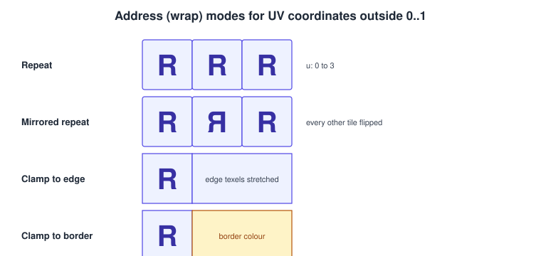
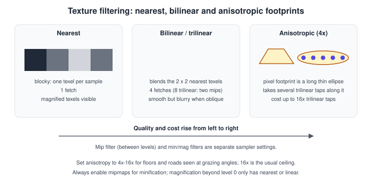
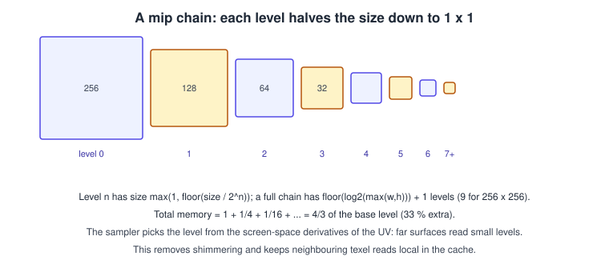
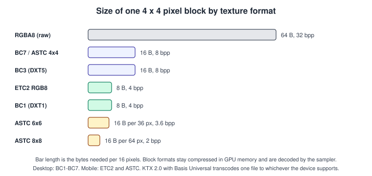

Textures, Sampling & Mipmaps
|
This content was generated with the assistance of AI and should be verified against the official documentation before being relied on in production. |
A texture is an array of values that a shader can look up with a coordinate. Most textures hold the colour of a surface, but the same mechanism stores normals, roughness, shadow depths, lookup tables, the previous frame, or the output of another pass. The lookup is not a plain array read: the hardware samples the texture, deciding which texels to read, how to blend them and which resolution to use, and that decision is the difference between a crisp book cover and a shimmering, aliased one.
Facts were checked in November 2026 against OpenGL 4.6 and OpenGL ES 3.2, Vulkan 1.4, Metal 4, the WebGPU specification (W3C Candidate Recommendation Draft of 15 September 2026), glTF 2.0
with KTX 2.0, and Unity 6. Requirements: any GPU of the last decade for the core features; compressed-format and anisotropy support are queried, not assumed. The Bookshelf running example uses
four PNG textures that ship with the bookshelf.glb model (wood, cover, spine and pages); the cover is the textured, mipmapped book of this page. Readers produce KTX 2.0 versions
of them with the toktx tool, as shown below. Colour handling (sRGB versus linear) is explained in more detail in
Colour spaces, HDR and tone mapping; the vertex attributes that carry UVs are in
Meshes and vertex data.
Texture objects and samplers
Two objects cooperate:
-
A texture (image) owns the data: dimensions, format, number of mip levels, array layers and samples.
-
A sampler owns the rules for reading it: wrap modes, filters, anisotropy, LOD range, comparison function.
OpenGL historically bundled both in one texture object (sampler parameters set with glTexParameteri) and added separate sampler objects in 3.3. Vulkan (VkImage plus VkSampler),
Metal (MTLTexture plus MTLSamplerState) and WebGPU (GPUTexture plus GPUSampler) separate them from the start. glTF follows the same split: a texture references an image and a sampler.
Separating them lets one sampler (for example, repeat plus trilinear plus 16x anisotropy) serve hundreds of textures.
Texture dimensionality:
| Kind | What it is | Typical use |
|---|---|---|
1D |
a line of texels |
gradients, colour ramps, lookup tables |
2D |
an image, optionally with mip levels |
albedo, normal, roughness, UI, render targets |
2D array |
many equal-sized 2D images indexed by an integer layer |
tile sets, terrain layers, shadow cascades, sprite sheets without bleeding |
3D (volume) |
width x height x depth, filtered in three dimensions |
colour grading LUTs, volumetric fog, noise |
Cube |
six square faces sampled by a direction vector |
skybox, reflections, image-based lighting |
Cube array |
several cube maps |
many reflection probes |
UV coordinates and texel space
Shaders address a 2D texture with normalised coordinates \((u, v)\) in the range 0 to 1 across the whole image regardless of its size, so the same UVs work if you swap a 256 x 256 texture for a 1024 x 1024 one. The hardware converts them to texel coordinates \((u \cdot w - 0.5,\ v \cdot h - 0.5)\); texel centres sit at half-integer positions, which is why a UV of exactly 0 samples between the edge texel and whatever the wrap mode supplies.
Orientation is the usual source of an upside-down image. glTF, Vulkan, Metal and WebGPU place the origin at the top left of the image with V increasing downward; OpenGL’s convention puts it at the bottom left. Engines flip V on import or flip the image on load; do it in one place only.
Wrap (address) modes
Coordinates outside 0 to 1 are legal and are resolved by the address mode, set per axis (U, V and W).

| Mode | Behaviour | API names |
|---|---|---|
Repeat |
the fractional part of the coordinate is used; the image tiles |
|
Mirrored repeat |
every other tile is flipped, so seams match |
|
Clamp to edge |
coordinates are clamped, so the edge texel is stretched |
|
Clamp to border |
outside the image a fixed border colour is returned |
|
Use repeat for tiling surfaces (the shelf’s wood), clamp to edge for anything that must not wrap (UI, render targets, lookup tables, the book cover) and mirrored repeat for seamless noise.
Bilinear filtering at the edge of a clamped texture still blends with the edge texel only; with repeat it blends with the opposite edge, which is why a non-tiling texture drawn with repeat shows a thin line.
The old GL_CLAMP mode of fixed-function OpenGL was removed from the core profile; GL_CLAMP_TO_EDGE is what the books' "clamp" now means.
Filtering
When a texture is shown larger than its resolution it is magnified; when it is shown smaller it is minified. Separate filters apply to each.

-
Nearest returns the single closest texel. It is blocky when magnified and aliased when minified, and is right for pixel art, data textures and integer IDs.
-
Bilinear (linear) blends the four nearest texels by their distance to the sample point. With the fractional texel offsets \(f_u\) and \(f_v\): \(c = (1-f_u)(1-f_v)\,c_{00} + f_u(1-f_v)\,c_{10} + (1-f_u) f_v\,c_{01} + f_u f_v\,c_{11}\).
-
Trilinear takes a bilinear sample from two adjacent mip levels and blends them by the fractional level of detail, which removes the visible "pop" between levels.
-
Anisotropic filtering handles surfaces seen at a grazing angle, where a pixel covers a long thin strip of the texture, not a square. The hardware takes several samples along the strip’s major axis (up to the sampler’s
maxAnisotropy, commonly 16) instead of blurring everything to the lowest level. It is the cheapest way to keep floors and road markings sharp at a distance.
Sampler parameters are separate for magnification and minification, plus the filter used between mip levels:
| API | Min / mag / mip filters | Anisotropy |
|---|---|---|
OpenGL |
|
|
Vulkan |
|
|
Metal |
|
|
WebGPU |
|
|
glTF |
sampler |
not expressed; the viewer decides |
Textures with integer, depth-comparison or 32-bit float formats may not be filterable on every device; check the format’s capabilities (in WebGPU the float32-filterable feature, in Vulkan
VK_FORMAT_FEATURE_SAMPLED_IMAGE_FILTER_LINEAR_BIT).
Mip chains
Minified textures alias: a pixel that covers 8 x 8 texels reads one of them and the result changes from frame to frame (shimmering). Mipmaps pre-compute smaller, filtered copies of the texture, each half the size of the previous, down to 1 x 1. The sampler then reads from the level whose texels are about one pixel in size.

-
Chain length: \(\lfloor \log_2 \max(w, h) \rfloor + 1\) levels, so 9 for 256 x 256 and 11 for 1024 x 1024. Non-square or non-power-of-two sizes round each level down and clamp at 1.
-
Memory: the extra levels add \(1/4 + 1/16 + \dots = 1/3\) of the base size, a 33 percent increase, for sharper and faster rendering.
-
Level selection: the GPU computes the screen-space derivatives of the UV for a 2 x 2 pixel quad and chooses \(\lambda = \log_2\!\big(\max(\lVert \partial(u,v)/\partial x \rVert,\ \lVert \partial(u,v)/\partial y \rVert)\cdot \text{size}\big)\). A bias can be added in the sampler (
mipLodBias,GL_TEXTURE_LOD_BIAS) or per sample. Negative biases sharpen and increase aliasing, which temporal anti-aliasing uses deliberately. -
Derivatives need uniform control flow: implicit-LOD sampling inside divergent branches is undefined. Use
textureLod,textureGrador the explicit variants there. WGSL enforces this with its uniformity analysis. -
Generation: offline tools generate the chain (with a better filter than the GPU’s box filter, such as a Lanczos or Kaiser kernel), or the application calls
glGenerateMipmap, Metal’s blitgenerateMipmaps(for:), a VulkanvkCmdBlitImageloop, or a WebGPU render pass per level (the API has no built-in call). Unity generates them from the importer’s setting. -
Colour textures in sRGB must be filtered in linear space: use an sRGB texture format so the GPU decodes before filtering, and generate mips in linear.
-
Atlases and mips: packing many images into one atlas makes lower mip levels blend neighbours (bleeding). Pad each tile, limit the mip count, or use a texture array.
Cube maps and texture arrays
A cube map is six square 2D images (positive and negative X, Y and Z) sampled with a 3D direction; the hardware picks the face from the largest component and the 2D coordinate from the other two. It stores a skybox,
a reflection probe or the diffuse and specular environment for image-based lighting on the lighting page. Vulkan, Metal and WebGPU always filter across cube edges
(seamless); in OpenGL you must call glEnable(GL_TEXTURE_CUBE_MAP_SEAMLESS), otherwise seams appear at low mip levels.
A 2D array has a layer index and no filtering between layers. Use it instead of an atlas for terrain splatting, tile maps and shadow cascades. Layer counts are limited (at least 256 in OpenGL, Vulkan and WebGPU at their default limits), and every layer shares one format, size and mip count.
Texture formats, sRGB and compression
A format names the channel layout and bit depth (RGBA8, RGBA16F, R8, D32F) plus the interpretation (unorm, snorm, float, integer, sRGB). Choose the sRGB variant for colour images (base colour, emissive) and
the linear variant for data (normal, roughness, metalness, occlusion, masks).
Uncompressed RGBA8 costs 4 bytes per pixel; a 2048 x 2048 texture with mips is about 21 MB. Block compression stores each fixed-size block of texels in a few bytes, decoded by the sampler on the fly, so it saves both memory and bandwidth.

| Family | Bits per pixel | Platforms | Notes |
|---|---|---|---|
BC1 to BC7 (S3TC and BPTC) |
4 to 8 |
Desktop GPUs, consoles, Macs; Vulkan feature |
BC1 for opaque colour, BC3 for colour plus alpha, BC4 and BC5 for one and two channels (roughness, normal XY), BC6H for HDR, BC7 for the best LDR quality. |
ETC2 and EAC |
4 to 8 |
OpenGL ES 3.0 and later (mandatory), Android, Vulkan |
Replaces ETC1; includes RGB, RGBA and one and two channel variants. |
ASTC |
0.89 to 8, selectable block sizes from 4x4 to 12x12 |
Apple GPUs, most Android and Arm GPUs, Vulkan |
One format with LDR and HDR profiles and quality chosen per asset. |
KTX 2.0 with Basis Universal (ETC1S or UASTC) |
depends on the transcoded target |
Container plus supercompressed, GPU-neutral payload |
Transcoded at load time to BCn, ETC2 or ASTC, whichever the device supports. glTF uses |
Compression is lossy and formats are not interchangeable: encode once per target, or ship KTX 2.0 and transcode. Normal maps compress best in two-channel formats (BC5 or ASTC with swizzle) with the Z component reconstructed in the shader. Do not compress render targets or textures a shader writes.
KTX 2.0 is Khronos’s container; it stores all mip levels, supports cube and array textures, and adds optional zstd supercompression of the payload. A typical offline command (KTX-Software, toktx) is:
# Converts the Bookshelf cover to a mipmapped, Basis Universal (UASTC) KTX 2.0 texture
toktx --t2 --encode uastc --uastc_quality 2 --zcmp 19 --genmipmap --assign_oetf srgb \
bookshelf-cover.ktx2 bookshelf-cover.png
# Data textures (normal, roughness) must stay linear
toktx --t2 --encode uastc --genmipmap --assign_oetf linear normal.ktx2 normal.pngRender targets
A texture can also be the target of drawing: a framebuffer attachment (colour, depth or stencil) for shadow maps, reflection captures, post-processing and deferred rendering. Requirements are the same in every API: create the image with the render-attachment usage and the shader-sampled usage, pick a renderable format (RGBA8, RGBA16F, depth 32F), and never sample a texture that is currently being written in the same pass (a feedback loop, which is undefined). Multisampled targets must be resolved to a single-sample texture before they can be sampled. Mipmaps of render targets are generated explicitly after drawing. Render targets are explained further in blending and post-processing and shadows.
Complete examples
A mipmapped, anisotropic texture in OpenGL 4.6 (C++)
// Assumes a current OpenGL 4.6 core context; `pixels` holds width x height RGBA8 data in sRGB.
GLuint texture, sampler;
const GLsizei levels = 1 + static_cast<GLsizei>(std::floor(std::log2(std::max(width, height))));
glCreateTextures(GL_TEXTURE_2D, 1, &texture);
glTextureStorage2D(texture, levels, GL_SRGB8_ALPHA8, width, height); // immutable storage
glTextureSubImage2D(texture, 0, 0, 0, width, height, GL_RGBA, GL_UNSIGNED_BYTE, pixels);
glGenerateTextureMipmap(texture); // linear-space box filter
glCreateSamplers(1, &sampler);
glSamplerParameteri(sampler, GL_TEXTURE_MIN_FILTER, GL_LINEAR_MIPMAP_LINEAR); // trilinear
glSamplerParameteri(sampler, GL_TEXTURE_MAG_FILTER, GL_LINEAR);
glSamplerParameteri(sampler, GL_TEXTURE_WRAP_S, GL_CLAMP_TO_EDGE);
glSamplerParameteri(sampler, GL_TEXTURE_WRAP_T, GL_CLAMP_TO_EDGE);
glSamplerParameterf(sampler, GL_TEXTURE_MAX_ANISOTROPY, 16.0f); // core since 4.6
glBindTextureUnit(0, texture);
glBindSampler(0, sampler);Source: OpenGL 4 reference: glTexStorage2D and glGenerateMipmap
Sampling in GLSL
#version 450 core
layout(binding = 0) uniform sampler2D uCover; // sRGB texture: decoded to linear on fetch
in vec2 vUv;
out vec4 fragColor;
void main() {
vec4 color = texture(uCover, vUv); // implicit LOD from derivatives
// Explicit alternatives:
// textureLod(uCover, vUv, 2.0) chooses level 2
// textureGrad(uCover, vUv, dFdx(vUv), dFdy(vUv)) supplies derivatives
fragColor = color;
}Source: GLSL 4.60: texture functions
A mipmapped texture and sampler in WebGPU (JavaScript and WGSL)
WebGPU has no generateMipmap; the application renders each level from the previous one.
async function createTexture(device, url) {
const bitmap = await createImageBitmap(await (await fetch(url)).blob(), { colorSpaceConversion: 'none' });
const mipLevelCount = Math.floor(Math.log2(Math.max(bitmap.width, bitmap.height))) + 1;
const texture = device.createTexture({
size: [bitmap.width, bitmap.height],
format: 'rgba8unorm-srgb',
mipLevelCount,
usage: GPUTextureUsage.TEXTURE_BINDING | GPUTextureUsage.COPY_DST | GPUTextureUsage.RENDER_ATTACHMENT,
});
device.queue.copyExternalImageToTexture({ source: bitmap }, { texture }, [bitmap.width, bitmap.height]);
generateMips(device, texture);
return texture;
}
function generateMips(device, texture) {
const module = device.createShaderModule({ code: `
@vertex fn vs(@builtin(vertex_index) i : u32) -> @builtin(position) vec4f {
let p = array(vec2f(-1, -1), vec2f(3, -1), vec2f(-1, 3));
return vec4f(p[i], 0, 1);
}
@group(0) @binding(0) var src : texture_2d<f32>;
@group(0) @binding(1) var smp : sampler;
@fragment fn fs(@builtin(position) pos : vec4f) -> @location(0) vec4f {
return textureSample(src, smp, pos.xy / vec2f(textureDimensions(src)) * 2.0);
}` });
const pipeline = device.createRenderPipeline({
layout: 'auto',
vertex: { module, entryPoint: 'vs' },
fragment: { module, entryPoint: 'fs', targets: [{ format: texture.format }] },
});
const sampler = device.createSampler({ minFilter: 'linear' });
const encoder = device.createCommandEncoder();
for (let level = 1; level < texture.mipLevelCount; ++level) {
const bindGroup = device.createBindGroup({
layout: pipeline.getBindGroupLayout(0),
entries: [
{ binding: 0, resource: texture.createView({ baseMipLevel: level - 1, mipLevelCount: 1 }) },
{ binding: 1, resource: sampler },
],
});
const pass = encoder.beginRenderPass({ colorAttachments: [{
view: texture.createView({ baseMipLevel: level, mipLevelCount: 1 }),
loadOp: 'clear', storeOp: 'store' }] });
pass.setPipeline(pipeline); pass.setBindGroup(0, bindGroup); pass.draw(3); pass.end();
}
device.queue.submit([encoder.finish()]);
}
const trilinear = device.createSampler({
magFilter: 'linear', minFilter: 'linear', mipmapFilter: 'linear',
addressModeU: 'clamp-to-edge', addressModeV: 'clamp-to-edge',
maxAnisotropy: 16,
});@group(0) @binding(0) var cover : texture_2d<f32>;
@group(0) @binding(1) var coverSampler : sampler;
@fragment
fn fs(@location(0) uv : vec2f) -> @location(0) vec4f {
// implicit derivatives require uniform control flow; use textureSampleLevel elsewhere
return textureSample(cover, coverSampler, uv);
}Source: WGSL: texture built-in functions
A texture and sampler in Metal (Swift)
import Metal
func makeTexture(device: MTLDevice, queue: MTLCommandQueue, pixels: [UInt8], width: Int, height: Int) -> MTLTexture {
let descriptor = MTLTextureDescriptor.texture2DDescriptor(
pixelFormat: .rgba8Unorm_srgb, width: width, height: height, mipmapped: true)
descriptor.usage = .shaderRead
let texture = device.makeTexture(descriptor: descriptor)!
texture.replace(region: MTLRegionMake2D(0, 0, width, height), mipmapLevel: 0,
withBytes: pixels, bytesPerRow: width * 4)
let commands = queue.makeCommandBuffer()!
let blit = commands.makeBlitCommandEncoder()!
blit.generateMipmaps(for: texture) // GPU box filter
blit.endEncoding()
commands.commit()
return texture
}
func makeSampler(device: MTLDevice) -> MTLSamplerState {
let descriptor = MTLSamplerDescriptor()
descriptor.minFilter = .linear
descriptor.magFilter = .linear
descriptor.mipFilter = .linear // trilinear
descriptor.maxAnisotropy = 16
descriptor.sAddressMode = .clampToEdge
descriptor.tAddressMode = .clampToEdge
return device.makeSamplerState(descriptor: descriptor)!
}#include <metal_stdlib>
using namespace metal;
struct VertexOut { float4 position [[position]]; float2 uv; };
fragment float4 coverFragment(VertexOut in [[stage_in]],
texture2d<float> cover [[texture(0)]],
sampler coverSampler [[sampler(0)]]) {
return cover.sample(coverSampler, in.uv); // sRGB decode happens on read
}A sampler and mip generation in Vulkan (C++)
VkSamplerCreateInfo samplerInfo{VK_STRUCTURE_TYPE_SAMPLER_CREATE_INFO};
samplerInfo.magFilter = VK_FILTER_LINEAR;
samplerInfo.minFilter = VK_FILTER_LINEAR;
samplerInfo.mipmapMode = VK_SAMPLER_MIPMAP_MODE_LINEAR; // trilinear
samplerInfo.addressModeU = VK_SAMPLER_ADDRESS_MODE_CLAMP_TO_EDGE;
samplerInfo.addressModeV = VK_SAMPLER_ADDRESS_MODE_CLAMP_TO_EDGE;
samplerInfo.addressModeW = VK_SAMPLER_ADDRESS_MODE_CLAMP_TO_EDGE;
samplerInfo.anisotropyEnable = VK_TRUE; // needs the samplerAnisotropy feature
samplerInfo.maxAnisotropy = std::min(16.0f, deviceProperties.limits.maxSamplerAnisotropy);
samplerInfo.minLod = 0.0f;
samplerInfo.maxLod = VK_LOD_CLAMP_NONE;
vkCreateSampler(device, &samplerInfo, nullptr, &sampler);
// Mip generation: the image needs TRANSFER_SRC and TRANSFER_DST usage and a format that supports linear blits.
int32_t w = width, h = height;
for (uint32_t level = 1; level < mipLevels; ++level) {
// transition level-1 to TRANSFER_SRC_OPTIMAL and level to TRANSFER_DST_OPTIMAL (barriers omitted)
VkImageBlit blit{};
blit.srcOffsets[1] = {w, h, 1};
blit.srcSubresource = {VK_IMAGE_ASPECT_COLOR_BIT, level - 1, 0, 1};
blit.dstOffsets[1] = {std::max(w / 2, 1), std::max(h / 2, 1), 1};
blit.dstSubresource = {VK_IMAGE_ASPECT_COLOR_BIT, level, 0, 1};
vkCmdBlitImage(cmd, image, VK_IMAGE_LAYOUT_TRANSFER_SRC_OPTIMAL,
image, VK_IMAGE_LAYOUT_TRANSFER_DST_OPTIMAL, 1, &blit, VK_FILTER_LINEAR);
w = std::max(w / 2, 1); h = std::max(h / 2, 1);
// transition level-1 to SHADER_READ_ONLY_OPTIMAL (barrier omitted)
}
// finally transition the last level to SHADER_READ_ONLY_OPTIMALA texture in Unity (C#)
using UnityEngine;
public class CoverTexture : MonoBehaviour
{
public Renderer bookRenderer;
void Start()
{
// linear: false means "this is an sRGB colour texture"; mipChain: true allocates all mip levels
var texture = new Texture2D(256, 256, TextureFormat.RGBA32, mipChain: true, linear: false);
texture.filterMode = FilterMode.Trilinear;
texture.anisoLevel = 8;
texture.wrapMode = TextureWrapMode.Clamp;
texture.mipMapBias = 0f;
// ... SetPixels32 or LoadRawTextureData here ...
texture.Apply(updateMipmaps: true, makeNoLongerReadable: true); // regenerates the mip chain, frees CPU copy
bookRenderer.material.mainTexture = texture;
}
}Source: Unity Scripting API: Texture2D
A texture, sampler and image in glTF
{
"images": [{ "uri": "bookshelf-cover.png", "mimeType": "image/png" }],
"samplers": [{ "magFilter": 9729, "minFilter": 9987, "wrapS": 33071, "wrapT": 33071 }],
"textures": [{ "sampler": 0, "source": 0 }],
"materials": [{ "pbrMetallicRoughness": { "baseColorTexture": { "index": 0, "texCoord": 0 } } }]
}Source: glTF 2.0: samplers and textures
Common mistakes
-
Forgetting mipmaps. The texture shimmers when minified. In Vulkan and WebGPU also set the mip count at creation; in OpenGL a texture without a full chain and with a mipmap min filter is "incomplete" and samples black.
-
Wrong colour space. A base colour in a linear format looks washed out; a normal map in an sRGB format lights incorrectly. Colour: sRGB format. Data: linear format.
-
Upside-down texture (V flip) or mirrored cube map faces. Pick one convention and convert in the importer.
-
Non-uniform control flow with implicit derivatives. Use explicit LOD or gradients inside branches and loops.
-
Atlas bleeding, edge seams from
repeaton non-tiling images, and cube-map seams in OpenGL withoutGL_TEXTURE_CUBE_MAP_SEAMLESS. -
Using compressed textures a device does not support. Query the format at runtime; ship KTX 2.0 and transcode, or ship per-platform assets.
-
Sampling a texture and rendering to it in the same pass.
-
Upload each frame with a mutable allocation. Allocate immutable storage once and update sub-regions.
-
Assuming non-power-of-two textures are slow or illegal. They are fully supported in OpenGL ES 3.0 and later, Vulkan, Metal and WebGPU, though mipmapping behaves best with even sizes.
Performance notes
-
Texture fetches dominate bandwidth in many scenes. Compression (BC7, ASTC 6x6, ETC2) and mipmaps often matter more than shader optimisation.
-
Prefer one trilinear plus anisotropic sampler for everything and reduce the anisotropy (or switch to bilinear) only after profiling; anisotropic cost is paid only where surfaces are oblique.
-
Texture memory is the limit on mobile and on integrated GPUs. Stream mips (load low levels first), use sparse or virtual textures for huge terrains and unload unused levels.
-
Keep textures that are sampled together the same size where possible; keep per-draw texture bindings low with arrays, bindless or descriptor indexing (Vulkan, Direct3D 12, Metal argument buffers) and atlases.
-
On tile-based GPUs, render-target loads and stores cost bandwidth: use
dontCareordiscardon attachments you do not need and memoryless storage on Apple GPUs. See GPU architecture basics.
Recent changes
-
KTX 2.0 with Basis Universal is the portable compressed container; glTF supports it through
KHR_texture_basisu, and engines and viewers transcode at load time. -
OpenGL 4.6 made anisotropic filtering core (
GL_TEXTURE_MAX_ANISOTROPY); before that it wasEXT_texture_filter_anisotropic. -
WebGPU exposes compressed formats as optional features (
texture-compression-bc,-etc2,-astc) and has no built-in mip generation; libraries such as three.js and Babylon.js provide it. -
Metal 4 and recent Vulkan versions continue to move toward descriptor indexing and argument buffers, so shaders select among thousands of textures without rebinding.
-
Unity 6 and Unreal Engine 5 both offer texture streaming and virtual texturing for very large worlds.
What the books say, and what changed
Selman’s Java 3D Programming (ch. 14) teaches texturing through Texture2D, TextureLoader, TexCoordGeneration, TextureAttributes and mipmap modes in Java 3D 1.2.1 and 1.3, including multi-texturing and sphere-map
coordinate generation; the OpenGL SuperBible (texture chapters) and the OpenGL ES 3.0 Programming Guide (ch. 9: 2D, 3D, cube and array textures, sampler state, compressed textures, immutable storage) cover the OpenGL side. The
principles (texel coordinates, wrapping, nearest and linear filters, mip chains, cube maps) are all still correct.
| In the books | Today |
|---|---|
Power-of-two texture sizes required, texture size limited to 256 x 256 or 1024 x 1024 |
Non-power-of-two sizes are fully supported; limits are 8192 to 32768 per side on current hardware. |
|
|
Java 3D |
UVs from the mesh and shader code; see lighting for environment lookups. |
ETC1 (no alpha) on OpenGL ES 2.0, S3TC as a patent-encumbered extension |
ETC2 and EAC (mandatory in OpenGL ES 3.0), BC1 to BC7 and ASTC, or a single KTX 2.0 file transcoded per device. |
Mutable textures ( |
Immutable storage ( |
Java 3D 1.2.1 and 1.3 |
Java 3D 1.7.x via JogAmp or another engine; textures are normally loaded as PNG, KTX 2.0 or glTF-embedded images. |
See it in
OpenGL: Textures and Samplers in OpenGL; WebGL: Textures and Samplers in WebGL; Metal: Textures and Samplers; Vulkan: Textures, Samplers and Mipmaps in Vulkan; Unity: Materials, Textures and Lighting; Unreal Engine: Materials and the Material Editor.
References
-
OpenGL 4 reference pages (glTexStorage, glGenerateMipmap, glSamplerParameter): https://registry.khronos.org/OpenGL-Refpages/gl4/
-
OpenGL Shading Language 4.60 specification: https://registry.khronos.org/OpenGL/specs/gl/GLSLangSpec.4.60.html
-
Vulkan specification, samplers and copy commands: https://docs.vulkan.org/spec/latest/
-
WebGPU: https://www.w3.org/TR/webgpu/ and WGSL: https://www.w3.org/TR/WGSL/
-
Apple Metal documentation, textures and sampler states: https://developer.apple.com/documentation/metal
-
glTF 2.0 specification and
KHR_texture_basisu: https://registry.khronos.org/glTF/specs/2.0/glTF-2.0.html -
KTX 2.0 and KTX-Software: https://www.khronos.org/ktx/ and https://github.com/KhronosGroup/KTX-Software
-
Unity Scripting API, Texture2D: https://docs.unity3d.com/ScriptReference/Texture2D.html
-
Java 3D (JogAmp): https://github.com/jogamp/java3d-core
-
Daniel Selman, Java 3D Programming (Manning, 2002): https://www.manning.com/books/java-3d-programming